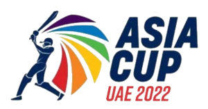

Asia Cup
Hello and welcome to my new article! My name is Somesh and I am excited to share about the Asia Cup. Throughout this article, I will be exploring the Asia Cup. Whether you're a Cricket Fans, or simply interested in learning more about Asia Cup, I believe that this article will provide valuable insights and information. So without further ado, let's dive in!
Brief Explaination about Asia Cup
Asia Cup also known as Asian Cricket Council Asia Cup is a cricket tournament played between Asian Countries. It was first held in 1984 at UAE(United Arab Emirates). This tournament supports One Day International(50 over) and Twenty20 International(20 over) format matches .The Asian Cricket Council (ACC) is the governing body for the Asia Cup tournament and hosts the tournament. The format of the tournament is Group Stage and knockout. It alternates every 2-years between ODI, 50 overs and T20I formats. After downsizing the Asian Cricket Council in 2015, it was announced by the ICC that Asia Cup events from 2016 would be played on a rotation basis between One Day International and Twenty20 International format, on the basis of the format of upcoming world events. As a result, the 2016 event was the first event played in the T20I format and functioned as a preparatory tournament ahead of the 2016 ICC World Twenty20. India, with seven titles (six ODI and one T20I), is the most successful team in the tournament. Sri Lanka is the second most successful team, with six. Sri Lanka has played the most Asia Cups (14) followed by India, Pakistan and Bangladesh who have played 13 each.
India, Pakistan, and Sri Lanka participated in this tournament in 1984. In 1986, Bangladesh joined the tournament, followed by the United Arab Emirates and Hong Kong in 2004, and Afghanistan in 2014.
Winners list in Asia Cup
In the following table you will get the Asian Cup Winners since 1984
| Year | Host Nation | Format (T20 or ODI) | Final Group & Venue | Winner |
| 1984 | UAE | Sharjah, India-Sri Lanka | India | |
| 1986 | Sri Lanka | Colombo, Sri Lanka-Pakistan | Sri Lanka | |
| 1988 | Bangladesh | Dhaka, India-Sri Lanka | India | |
| 1990-91 | India | Kolkata, India-Sri Lanka | India | |
| 1993 | Pakistan | --- | Cancelled | |
| 1995 | UAE | Sharjah, India-Sri Lanka | India | |
| 1997 | Sri Lanka | Colombo, Sri Lanka-India | Sri Lanka | |
| 2000 | Bangladesh | Dhaka, Sri Lanka-Pakistan | Pakistan | |
| 2004 | Sri Lanka | Colombo, Sri Lanka-India | Sri Lanka | |
| 2008 | Pakistan | Karachi, Sri Lanka-India | Sri Lanka | |
| 2010 | Sri Lanka | Dambulla, India-Sri Lanka | India | |
| 2012 | Bangladesh | Mirpur, Pakistan-Bangladesh | Pakistan | |
| 2014 | Bangladesh | Mirpur, Sri Lanka-Pakistan | Sri Lanka | |
| 2016 | Bangladesh | T20 | Mirpur, India-Bangladesh | India |
| 2018 | UAE | ODI | Dubai, India-Bangladesh | India |
| 2022 | UAE | T20I | Dubai, Sri Lanka-Pakistan | Sri Lanka |
In 2023 the Asia Cup will be hosted in Pakistan
The following table shows teams and the number of times they won the tournament or their best performance
| Team | Champions/Best performance |
| India | Champions(1984, 1988, 1990–91, 1995, 2010, 2016, 2018) |
| Sri Lanka | Champions(1986, 1997, 2004, 2008, 2014, 2022) |
| Pakistan | Champions (2000, 2012) |
| Bangladesh | Runners-up (2012, 2016, 2018) |
| Afghanistan | Super Four (2018, 2022) |
| Hong Kong | Group stage (2004, 2008, 2018, 2022) |
| United Arab Emirates(UAE) | Group stage (2004, 2008, 2016) |
Hope this article provides you knownledge about Asia Cup tournament and it's winners you can find more about this topic on wikipedia. Have a nice day